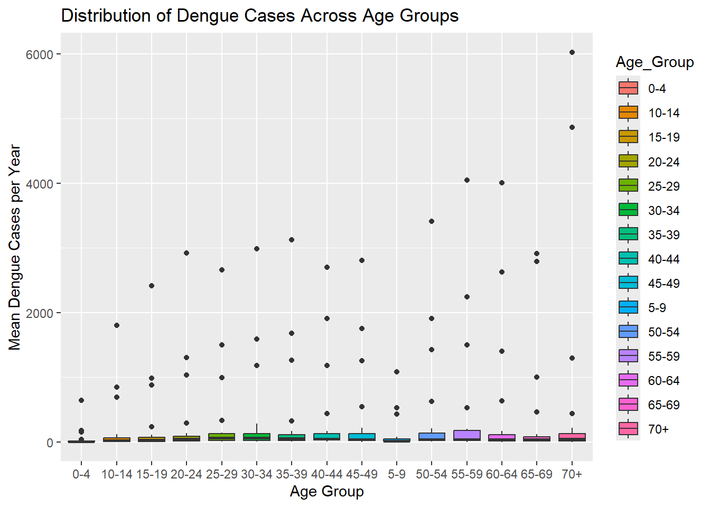

Loading R packages
pacman::p_load(tidyverse, plotly, sf, tmap, GGally, ggstatsplot, ggmosaic)Jia Peng Chua | Zanelle Lee Wenfang
March 31, 2025
Onset_Date Gender Age_Group
Min. :1998-01-02 Length:106525 Length:106525
1st Qu.:2014-10-30 Class :character Class :character
Median :2015-09-30 Mode :character Mode :character
Mean :2016-04-21
3rd Qu.:2023-07-18
Max. :2025-03-07
Residential_County_City Residential_Town_District X_coord
Length:106525 Length:106525 Min. :118.3
Class :character Class :character 1st Qu.:120.2
Mode :character Mode :character Median :120.3
Mean :120.3
3rd Qu.:120.3
Max. :122.0
Y_coord Imported_Case Serotype
Min. :21.93 Length:106525 Length:106525
1st Qu.:22.63 Class :character Class :character
Median :22.96 Mode :character Mode :character
Mean :22.91
3rd Qu.:23.00
Max. :26.16
MOI_Residential_County_Code MOI_Residential_Town_Code Onset_Year
Min. : 63.0 Min. : 900701 Min. :1998
1st Qu.: 64.0 1st Qu.:6400700 1st Qu.:2014
Median : 67.0 Median :6401700 Median :2015
Mean : 540.6 Mean :6283327 Mean :2016
3rd Qu.: 67.0 3rd Qu.:6703300 3rd Qu.:2023
Max. :10020.0 Max. :6801200 Max. :2025
NA's :476 NA's :476
Onset_Epiweek
Min. : 1.0
1st Qu.:36.0
Median :40.0
Mean :39.8
3rd Qu.:45.0
Max. :53.0
First, let’s visualise the distribution of mean dengue cases by age groups.
mean_age_group_year <- dengue_daily %>%
group_by(Age_Group, Onset_Year) %>%
summarize(Mean = mean(n()), .groups = "drop")
ggplot(mean_age_group_year, aes(x = Age_Group, y = Mean, fill = Age_Group)) +
geom_boxplot() +
labs(title = "Distribution of Dengue Cases Across Age Groups",
x = "Age Group",
y = "Mean Dengue Cases per Year")
We perform chi-square test using the sum of dengue cases by age group.
H0: The number of dengue cases is independent of age group
H1: The number of dengue cases depends on age group
Conclusion:
Since p-value is < 0.05, we reject the null hypothesis at 5% significance level.
This suggests that the number of dengue cases varies significantly across different age groups.
We perform chi-square test using the sum of dengue cases by age group.
H0: The distribution of dengue cases across age group does not change over the years
H1: The distribution of dengue cases across age group changes over the years
Pearson's Chi-squared test
data: sum_age_group_year_table
X-squared = 18.651, df = 378, p-value = 1Conclusion:
Since p-value is > 0.05, we do not reject the null hypothesis at 5% significance level.
This suggests that the number of dengue cases does not change across different age groups over the years.
We perform Kruskal-Wallis test using the mean of dengue cases by age group.
H0: The mean number of dengue cases per year is the same across all age groups
H1: The mean number of dengue cases per year is the differs across all age groups
Conclusion:
Since p-value is < 0.05, we reject the null hypothesis at 5% significance level.
This suggests that the mean number of dengue cases differs across different age groups.
H0: There is no difference in the number of dengue cases between male and female
H1: There is a difference in the number of dengue cases between male and female
Welch Two Sample t-test
data: Count by Gender
t = -0.058509, df = 53.945, p-value = 0.9536
alternative hypothesis: true difference in means between group F and group M is not equal to 0
95 percent confidence interval:
-2652.601 2502.172
sample estimates:
mean in group F mean in group M
1864.607 1939.821 Conclusion:
Since p-value is > 0.05, we do not reject the null hypothesis at 5% significance level.
This suggests that there is no difference in the number of dengue cases between male and female.
H0: There is no difference in the number of dengue cases between imported and local cases
H1: There is a difference in the number of dengue cases between imported and local cases
Welch Two Sample t-test
data: Count by Imported_Case
t = 1.9374, df = 25.008, p-value = 0.06407
alternative hypothesis: true difference in means between group No and group Yes is not equal to 0
95 percent confidence interval:
-236.8206 7750.2656
sample estimates:
mean in group No mean in group Yes
3920.6154 163.8929 Conclusion:
Since p-value is < 0.10, we reject the null hypothesis at 10% significance level.
This suggests that there is significant difference in the number of dengue cases between imported and local cases.
H0: There is no difference in the number of dengue cases between different serotypes
H1: There is a difference in the number of dengue cases between different serotypes
group_by_serotype <- dengue_daily %>%
group_by(Serotype, Onset_Year) %>%
summarize(Count = n(), .groups = "drop")
# Excluding data with missing Serotype
group_by_serotype_test <- group_by_serotype %>% filter(!is.na(Serotype))
anova_serotype <- aov(Count ~ Serotype, data = group_by_serotype_test)
summary(anova_serotype) Df Sum Sq Mean Sq F value Pr(>F)
Serotype 3 821472 273824 1.788 0.154
Residuals 104 15931323 153186 Conclusion:
Since p-value is > 0.05, we do not reject the null hypothesis at 5% significance level.
This suggests that there is no difference in the number of dengue cases between different serotypes.
H0: There is no difference in the number of dengue cases between county cities
H1: There is a difference in the number of dengue cases between county cities
Kruskal-Wallis rank sum test
data: Count by Residential_County_City
Kruskal-Wallis chi-squared = 216.98, df = 21, p-value < 2.2e-16Conclusion:
Since p-value is < 0.05, we reject the null hypothesis at 5% significance level.
This suggests that there is significant difference in the number of dengue cases between county cities.